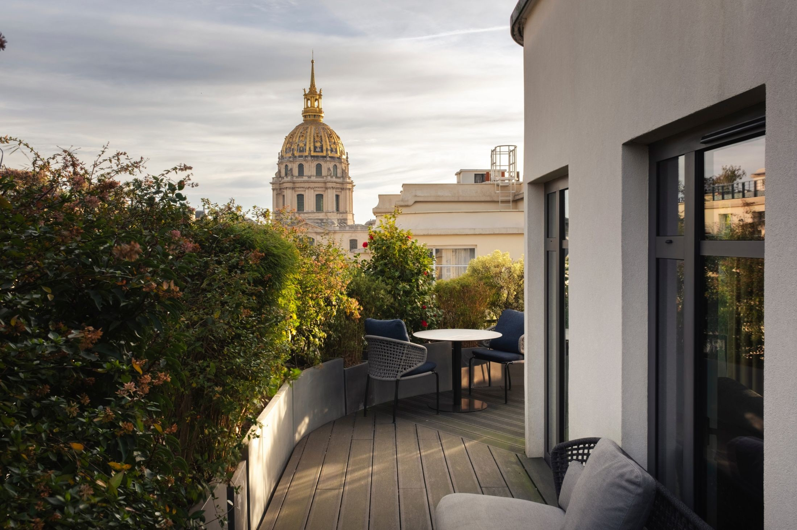
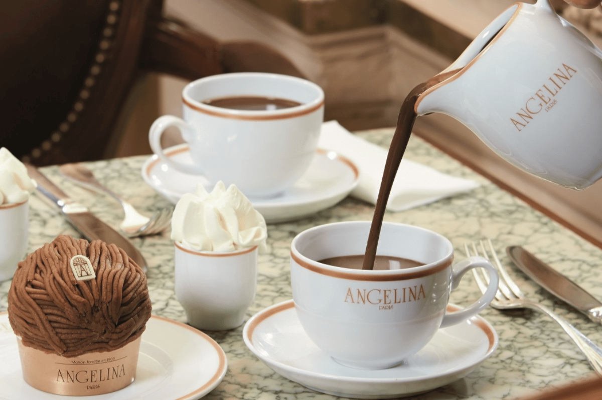

Paris
Each day has a timeline. Items marked core are the main plan — the things that make the day. Items marked if energy allows are great add-ons if Lucy is cooperating and you have the energy, but skip them guilt-free. Unmarked items (morning coffee, evening dinner) are just the natural rhythm of the day.
Quick Reference
- Hotel
- Hôtel Le Cinq Codet · Spa Suite
5 Rue Louis Codet, 75007 Paris
+33 1 53 85 15 60 - Nearest Metro
- École Militaire (Line 8)
La Tour-Maubourg (Line 8)
~3 min walk to either - Arrival
- Wed May 13 · CDG · 11:00 AM
Taxi (~50 min) or RER B (~1h15) - Departure
- Sat May 16 · Montparnasse · 10:15 AM
Train (~15 min taxi to station) - Taxi App
- G7 — Book on demand with car seat
Install app before trip. Select "siège bébé" (baby seat) option when booking. - Emergency
- 112 (EU general)
15 (SAMU / medical)
17 (Police) - Check-in / Check-out
- Check-in: 3:00 PM · Check-out: 12:00 PM — Le Cinq Codet is a small boutique hotel; they're typically accommodating with early bag drop. Call or email ahead to ask about early access to the spa suite.
Trip Overview Map
Everything on this trip plotted on one map. The hotel is your home base in the 7th — nearly everything is within walking distance, with Day 1 starting at Concorde and Day 2 extending east to Notre-Dame.
Weather & Light
Over 4 days, expect 1–2 with some rain — usually brief showers, not full washouts. A packable rain shell is enough. That said, a cool, drizzly day is absolutely possible and you'll want a warm layer if it happens.
Evenings stay light until nearly 10 PM. Golden hour starts around 8 — long, warm light for photos along the Seine.
What to pack: Layers — mid-May Paris is variable. A warm day can hit 73°F by afternoon, but a cool or rainy day might stay in the upper 50s. Bring a light jacket, a packable rain shell, and one warmer layer for early mornings (could be 45–50°F). Sunglasses and a hat for Lucy.
Arrival, Rue Cler & the Eiffel Tower
This is an arrival day. The only goal is to land, get to the hotel, and take a walk. If Lucy needs to nap in the carrier while you wait for the room, all the better — the Eiffel Tower is an 8-minute walk from the hotel door.
Day 0 Map
Land at CDG. Expect 30–45 minutes for passport control + baggage. You have two good options for getting to the hotel:
🚕 Option A — Taxi (faster, simpler). Have the G7 app ready, or grab one from the stand outside arrivals. Flat rate to Left Bank: ~€55–65, takes 45–70 min depending on traffic. Door-to-door, no transfers. Downside: Lucy is in the car seat the whole time.
🚆 Option B — RER B train (longer, but Lucy is free). If Lucy is being fussy and hates the car seat, this is a real option. She can ride in the stroller or carrier the whole way. Take the RER B from CDG Terminal 2 toward Paris (~50 min) to Denfert-Rochereau, then transfer to Métro Line 6 direction Charles de Gaulle–Étoile and ride 4 stops to La Motte-Picquet–Grenelle (~10 min). From there it's a 10-minute walk to the hotel. Total: ~1 hr 15 min, ~€11.45/adult (under-4s free). The trade-off: you're navigating turnstiles, stairs, and a transfer with luggage + stroller. Denfert-Rochereau has elevators for the RER-to-Métro transfer — check on the day.
Decision point: read the room at CDG. If Lucy seems chill, take the taxi. If she's melting down about the car seat, the train is the move.
Arrive at Hôtel Le Cinq Codet. Drop bags at the front desk. If the room is ready early, great. If not, you now have the perfect excuse to go for a walk.
optional Pick up lunch at Lastre Sans Apostrophe — an excellent deli on Rue de Grenelle, a 10-minute walk from the hotel. Great charcuterie, salads, and sandwiches to eat in the park or bring back to the room. (NYT Guide pick.)
Walk to Champ de Mars / Eiffel Tower. Head south down Avenue de la Bourdonnais or Rue de Grenelle — you'll see the tower almost immediately. It's barely 800 meters. No agenda needed. Walk the park, find a bench, take some photos, let Lucy look at the trees. This is a walk, not a visit.
If Lucy falls asleep in the carrier or Doona on the way, just keep strolling. The park is wide and flat with good paths.

Champ de Mars — an 8-minute walk from the hotel.
Check in properly. Unpack. Get Lucy settled. Start to let the spa suite do its work — Hop in the hot tub if you're not too tired. Decompress.
Walk Rue Cler. This is your neighborhood market street, ~5 minutes from the hotel. Pick up essentials: grab a baguette, some cheese, fruit, and a bottle of wine from Nicolas or one of the small caves. Wander. This street is one of the most charming in Paris and it's your backyard for 3 days.
Order room service, and put Lucy down for the night. You're jet-lagged and that's fine. Eat on the terrace, drink a glass of wine, hot tub some more.
Where to Eat — Day 0
Classic corner bistro with a generous terrace. Good for a first-night steak-frites or croque monsieur. Relaxed, not fussy. Right on Rue Cler.
Smaller, slightly cozier. Good salads, simple dishes. Can feel a bit tight with a stroller — bring the carrier if going here.
Excellent neighborhood bakery, a few minutes from the hotel. Croissants, pain au chocolat, baguettes. Go here in the morning on any day.
Cozy brunch spot in the neighborhood. Good option if you're craving a proper sit-down brunch after arriving. Optional — only if you have the energy after the flight.
Outstanding neighborhood deli — charcuterie boards, salads, and sandwiches to grab and go. Perfect for picking up lunch on arrival day. Eat in the park or bring it back to the room. (NYT Guide.)
Tuileries, Angelina & the Right Bank
Metro to the far end, then walk back toward the hotel — so you're always heading home, never backtracking. Start with Angelina and the Louvre Pyramid, loop through the Tuileries past the Orangerie if you want it, cross Pont Alexandre III for the big photo stop, and walk the Left Bank quais home. Everything flows downhill geographically.
The Route
Metro out to Concorde, then walk back toward the hotel all morning: Angelina → Louvre Pyramid → Tuileries → Pont Alexandre III → home. ~50 min total walking, always heading in the right direction.
Day 1 Map
Slow morning. Coffee from the hotel or walk to Café Petibon (47 Rue Cler, ~5 min walk) — charming neighborhood café with great coffee and pastries. Or grab a pastry from Boulangerie Secco. No rush.
Take the metro to Concorde. Walk to École Militaire station (~5 min from hotel), take Line 8 direction Créteil — 4 stops to Concorde. Quick, easy, saves your legs for the walk back. Exit toward Rue de Rivoli.
Angelina (226 Rue de Rivoli). Your wife wants this — the famous hot chocolate ("l'Africain") and Mont-Blanc pastry. The sit-down salon often has a wait, but there's a takeaway counter that's much faster. Grab pastries and hot chocolates to-go and eat them on a bench in the Tuileries. This is better than waiting 30+ minutes for a table, especially with a baby.

Angelina — the famous hot chocolate and Mont-Blanc.
Louvre Exterior + Pyramid. Walk east from Angelina along Rue de Rivoli or cut through the Tuileries. The Arc de Triomphe du Carrousel appears first, then the glass Pyramid. Walk through the Cour Carrée (the quiet Renaissance courtyard east of the Pyramid) — fewer tourists, beautiful architecture, great photos. You do not need to go inside the Louvre. The exterior is the visit.

The Louvre Pyramid — you don't need to go inside.
Musée de l'Orangerie. Head back west through the Tuileries to the southwest corner. Book tickets in advance at musee-orangerie.fr. This museum is perfect with a baby:
- It's small — you can see the whole thing in 45–60 minutes
- The Monet Water Lilies rooms are calm, oval, quiet — almost meditative
- The lower level has excellent Impressionist/Post-Impressionist works (Renoir, Cézanne, Modigliani)
- Baby in carrier works great here. Stroller also fine — it's accessible
- Thursday mornings are generally less crowded than weekends
If Lucy is melting down, skip it and keep walking west toward the bridge.

Musée de l'Orangerie — Monet's Water Lilies in the oval rooms.
Place de la Concorde. You're right at the west end of the Tuileries. The Egyptian obelisk, the fountains, views in every direction — Champs-Élysées to the north, river to the south, Eiffel Tower to the west. A quick 10-minute photo stop before heading to the bridge.
Pont Alexandre III. Walk south from Concorde along the river — the bridge is right there. This is arguably the most beautiful bridge in Paris. Shoot back toward the Eiffel Tower — it's one of the best vantage points in the city. Cross to the Left Bank. 15–20 minutes here is plenty. From here, you're walking toward the hotel.

Pont Alexandre III — the most beautiful bridge in Paris.
Walk home. Cross the river on Pont Alexandre III and head south through the Esplanade des Invalides. It's a wide, flat, straight walk — ~15 minutes back to the hotel. You've been walking toward home since the Louvre.
Back at hotel. Lucy nap. Your nap. Spa suite. Hot tub. Read a book. This is what you're paying for. Recharge for the afternoon.
Musée Rodin. If the afternoon nap went well and everyone has energy, the Rodin gardens are spectacular in the late afternoon light — and it's only a 7-minute walk from the hotel (77 Rue de Varenne). The gardens close at 6:30 PM. You can do garden-only tickets. The Thinker, The Gates of Hell, wide paths, benches everywhere. This is one of the most baby-friendly museums in Paris. Book at musee-rodin.fr.
If not today, you can do Rodin on Day 2 instead — see below.

Musée Rodin gardens — wide paths, open air, benches. Best museum in Paris for a baby.
Light dinner at cafe terrace on Rue Cler, or room service. Wine from your Rue Cler haul. Hotel bar with baby monitor once Lucy is down. Enjoy the spa suite.
Where to Eat — Day 1
Charming neighborhood café, a short walk from the hotel. Great coffee and pastries. Perfect for a relaxed morning start before heading out.
Get the hot chocolate ("l'Africain"), a Mont-Blanc, and whatever else looks good. Use the takeaway counter on the left side — dramatically shorter wait. Eat in the Tuileries. This is the move.
If you end up near the Palais Royal after the Louvre exterior. Great matcha and coffee in a beautiful garden setting. Slightly out of the way but worth noting.
Notre-Dame & the Left Bank
Left Bank day. The anchor is Notre-Dame — freshly reopened after the fire and absolutely worth seeing. Walk east along the Seine, cross to the Île de la Cité, see the cathedral, then wander the island and head home along the river. If you didn't do Musée Rodin yesterday afternoon, you can start the day there before heading east. Saint-Germain is a lovely detour if energy allows.
The Route
Walk east along the Seine to Notre-Dame (~30 min), explore the island, then wander back along the Left Bank. Optional detours to Saint-Germain or Luxembourg on the way home.
Day 2 Map
Morning pastry run. Boulangerie Secco or another neighborhood bakery. Coffee at the hotel or from Café Petibon if you loved it yesterday.
Musée Rodin. If you didn't get here yesterday afternoon, this is a great morning option — it's a 7-minute walk from the hotel (77 Rue de Varenne). The gardens are the main attraction: The Thinker, The Gates of Hell, wide paths, benches, grass. Garden-only tickets available. Budget 1–1.5 hours. Book at musee-rodin.fr. If you did Rodin yesterday, skip straight to Notre-Dame.
Walk to Notre-Dame. Head east along the Left Bank quais — you'll pass the Musée d'Orsay (beautiful exterior, note for a future trip), bouquinistes (book stalls), and cross to the Île de la Cité via the Pont Saint-Michel or Pont au Double. Notre-Dame reopened in December 2024 after the fire reconstruction — the exterior is stunning. Check notredamedeparis.fr for current visitor information if you want to go inside — free entry but timed reservation may be required.

Notre-Dame — rebuilt and reopened December 2024.
Place Dauphine. Walk to the western tip of the Île de la Cité. Place Dauphine is a quiet, triangular square with trees and bistros — one of the hidden gems of Paris. Feels completely separate from the tourist bustle of Notre-Dame just a few hundred meters away. Wander through, take a photo, and keep moving.

Place Dauphine — a hidden triangle of calm on the Île de la Cité.
Saint-Germain-des-Prés. Cross back to the Left Bank and walk west along Boulevard Saint-Germain. The walk takes you through quiet streets — boutiques, bookshops, small galleries. This is peak "atmosphere over checklist" territory. Grab lunch at Café de Flore, Les Deux Magots, or Maison Fleuret. This is the neighborhood for lingering.

Saint-Germain-des-Prés — boutiques, bookshops, and terraces.
Jardin du Luxembourg. From Saint-Germain, it's a 10–15 minute walk south to the gardens. Beautiful fountain, green metal chairs everywhere, wide gravel paths perfect for the stroller. There's a playground area near the southwest corner if Lucy wants to look at other kids. This is a "sit on a bench and just be in Paris" kind of stop. Skip guilt-free if you're ready to head back.

Jardin du Luxembourg — green chairs, fountain, and calm.
Head back to the hotel. You've been on your feet all morning — here are your options from wherever you end up:
🚕 Taxi (G7): ~12–15 min door-to-door. €12–18. Easiest option, especially from Saint-Germain or Luxembourg.
🚶 Walk: ~30 min from Notre-Dame / Place Dauphine. Cross to the Left Bank and walk the quais west past the Musée d'Orsay and Assemblée Nationale. Flat and scenic the whole way.
🚇 Metro: ~20 min. Cité (Line 4) → Strasbourg–Saint-Denis (transfer Line 8) → École Militaire. Or RER C Saint-Michel to Pont de l'Alma (~12 min).
Hotel. Naps. Spa. Hot tub. This is your last full afternoon — use it.
Final evening in Paris. Options: a slightly nicer dinner nearby, or keep it simple with Rue Cler and wine at the hotel. Pack after Lucy goes down. Last spa session.
Where to Eat — Day 2
Yes it's touristy. Yes it's overpriced. Do it once anyway. The terrace is iconic. Order a croque monsieur and a café crème. Great for people watching. Lucy will be the most interesting person there.
Same vibe as Café de Flore, directly across the street. Pick whichever has a table open. The hot chocolate here is excellent.
Tiny, only serves oysters, white wine, and bread. If you love oysters and can squeeze in. Very small — might be tricky with stroller.
Featured in the NYT Paris guide. Charming bistro near the Seine with excellent classic French cooking. Great for a proper lunch. Reservations recommended.
Excellent small wine shop specializing in small French producers. English-speaking staff. If you want to find something special to bring home, stop here during the Saint-Germain walk.
Last Croissant & Au Revoir
Train departs Gare Montparnasse at 10:15 AM. You want to be at the station by 9:30–9:45. This is a short morning — don't overthink it.
Day 3 Map
Wake up. Final pack. You should have packed most things last night.
Breakfast. Either at the hotel or grab a pastry from Boulangerie Secco on the way out. Last café crème.
Checkout. Head to Montparnasse.
- Taxi (G7): ~12–15 min. Easiest with luggage + baby. Book 10 min ahead via the app.
- Metro: École Militaire (Line 8) → change at La Motte-Picquet–Grenelle to Line 6 → Montparnasse-Bienvenüe. ~15 min total. Doable but stairs can be a hassle with bags.
Arrive at Gare Montparnasse. Find your platform. The departures board usually updates 20 min before departure. Hall 1 vs Hall 2 depends on your destination — check your ticket.
Train departs. Au revoir, Paris.
Practical Notes
Metro vs. Walking vs. Taxi
Walking is your default. Most of your destinations are within 20–40 minutes of the hotel. Paris is flat, the sidewalks are good, and the whole point of the trip is to see the city on foot. With the carrier, you can walk for miles.
Metro is useful for: Getting to Concorde to start Day 1 (Line 8 from École Militaire), possibly getting to Saint-Germain (Day 2), and reaching Montparnasse (Day 3). Your nearest stations are École Militaire and La Tour-Maubourg, both on Line 8.
Metro with a baby — real talk: Many Paris metro stations have no elevator and no escalator. You will carry the stroller up and down stairs. The carrier is much easier for metro trips. If you use the Doona on the metro, fold it and carry it. Or just leave the Doona at the hotel and use the carrier for metro days.
Buy a carnet of t+ tickets (pack of 10) at any metro station — valid for metro, bus, and RER within Paris. Or use contactless credit cards if available on your arrival. The Navigo Easy card (rechargeable) is also an option — buy at any station.
G7 Taxi App: Download before the trip. You can request a car seat ("siège bébé") when booking. Works like Uber but with licensed Paris taxis. Very reliable, especially with luggage or when everyone's tired. Use it for the CDG transfer, the Montparnasse departure, and anytime walking sounds like too much.
Baby-Friendly Dining in Paris
- Terraces are your best friend. More space for stroller, Lucy can look around, less noise concern. Most Paris cafés have outdoor seating in May.
- Lunch is easier than dinner. French lunch service starts around noon. Eat at 12:00–12:30 before the rush. Dinner in Paris starts at 7:30–8:00 PM, which is likely past Lucy's bedtime anyway.
- High chairs are inconsistent. Some places have them, many don't. The carrier or your lap will work. A clip-on portable high chair can be useful but isn't essential for 3 days.
- Bread is a baby toy. Every restaurant gives you bread. Lucy will be entertained.
- Nobody minds a baby in a bistro. The French are generally welcoming to babies in restaurants during the day. Don't stress about it.
Where to Buy Wine Near the Hotel
Reliable French wine chain. Staff is knowledgeable and usually speaks some English. Great for everyday bottles at €8–15. Ask for recommendations — they enjoy helping. Good picks for value: Côtes du Rhône, Crozes-Hermitage, Chablis, Sancerre. If bringing wine home, they sell protective shipping boxes.
Small-producer specialist. English-speaking staff (American-owned). Excellent for finding something unique. Slightly pricier but worth it for a special bottle. Hit this on Day 2 during the Saint-Germain walk.
There are a few small independent wine shops along Rue Cler. Ask for "un bon rapport qualité-prix" (good value) and they'll guide you. Budget €8–18 for drinking wine, €20–35 for something to bring home.
Grocery & Pharmacy
- Franprix — small grocery chain, several locations near the hotel. Good for water, snacks, fruit, yogurt, basic baby food. The one near Rue Cler is your closest bet.
- Monoprix — larger chain with groceries + pharmacy + household items + clothing. There's one in the 7th and one in the Montparnasse station. If you need diapers, wipes, or formula, this is the one-stop shop.
- Pharmacies (Pharmacie) — French pharmacies are exceptional. Green cross sign. They carry baby care products (Mustela, A-Derma), diapers, baby sunscreen, infant pain relief (Doliprane = French baby Tylenol). Pharmacists are helpful and many speak English. Open daily; some have Sunday hours. Don't pack too many baby supplies — buy here.
Realistic Expectations with a 9-Month-Old
You already know this, but it's worth writing down so you can both read it on Day 2 when you're tired:
- One anchor outing per day is the right amount. You'll fill the rest with meals, naps, walks, and hotel time — and that's not wasted time, that's the trip.
- Lucy sets the pace. If she needs to nap at 11 AM, you nap at 11 AM or walk until she sleeps. Don't fight the schedule, ride it.
- The hotel room is not a consolation prize. You have a spa suite with a hot tub. Use it. Afternoons in the room are a feature, not a failure.
- The moments between destinations matter most. The Seine at sunset. A pastry on a bench. Lucy babbling at pigeons. That's the stuff.
- You will not see everything on this list. That's by design. This itinerary has more than you need so you can choose in the moment based on energy and mood.
- Paris will be here next time. This trip is about being in Paris together, not about seeing Paris comprehensively.
Photography Notes
- Best light: Morning (8–10 AM) and golden hour (7:30–9:00 PM in mid-May). Midday light is harsh on buildings but fine for gardens.
- Pont Alexandre III: Morning light from the east. Shoot toward the Eiffel Tower from the center of the bridge.
- Tuileries: Morning light is best, with the sun behind you as you face the Louvre to the east.
- Champ de Mars / Eiffel Tower: Sunset and blue hour are magic, but midday works too since you're just walking.
- Notre-Dame: Morning light on the south side, afternoon light on the west facade.
- The Seine: Late afternoon through sunset. The water catches the light beautifully.
- Eiffel Tower sparkle: Every hour on the hour after sunset for 5 minutes. Visible from many places in the 7th — potentially even from your hotel area.
Wine Buying Guide
You don't need to be an expert. Here's what to look for at Nicolas or any cave near the hotel.
For Drinking at the Hotel (€7–15)
- Côtes du Rhône (red) — Grenache-based, fruit-forward, easy drinking. The everyday wine of France. €7–10.
- Crozes-Hermitage (red) — Syrah from the Northern Rhône. A step up from Côtes du Rhône, still great value. €10–15.
- Bourgogne Rouge (red) — entry-level Burgundy Pinot Noir. Light, elegant. €10–15.
- Sancerre (white) — Loire Valley Sauvignon Blanc. Crisp, mineral, perfect for warm afternoons. €12–17.
- Chablis (white) — Burgundy Chardonnay, unoaked, lean. Amazing with cheese. €10–15.
- Picpoul de Pinet (white) — Languedoc, very affordable, crisp. €6–9.
To Bring Home (€18–35)
- Saint-Joseph or Cornas (red) — Northern Rhône Syrah with more complexity.
- Châteauneuf-du-Pape (red) — a classic for a reason.
- Pouilly-Fumé (white) — like Sancerre's sibling, often with more body.
- Ask the staff: "Qu'est-ce que vous conseillez pour ramener aux États-Unis?" (What do you recommend to bring back to the US?)
Prepared March 2026. Verify hours, prices, and reservation requirements before travel.
Bon voyage. 🇫🇷